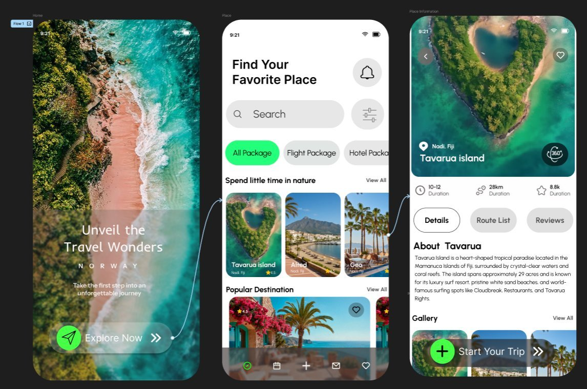

Existing travel booking apps (MakeMyTrip, Booking.com) overwhelm users with complex search fields and dates before showcasing any destinations. This transaction-first approach causes immediate decision fatigue, losing the joy of discovery before the journey even begins.
TravelWonder pivots from a transaction-first model to an inspiration-first model. Using high-fidelity visuals, mood-based category selectors, and immersive 360-degree interactive previews, we prioritize emotional engagement and simplify decision-making.
Understanding why transactional travel discovery is fundamentally disconnected from the user journey.
| Feature | MakeMyTrip | Booking.com | TravelWonder (Proposed) |
|---|---|---|---|
| Clean Minimalist UI | ✗ No | ~ Partial | ✓ Yes |
| Inspiration-First Exploration | ✗ No | ✗ No | ✓ Yes |
| Visual-Heavy Destination Feed | ✗ No | ~ Partial | ✓ Yes |
| Mood & Aesthetic Filters | ✗ No | ✗ No | ✓ Yes |
| 360° Immersive Previews | ✗ No | ✗ No | ✓ Yes |
| Persistent Sticky Booking CTA | ✗ No | ✓ Yes | ✓ Yes |
Surveys conducted with 32 travel enthusiasts (aged 22–32) who plan 4–6 trips annually.
Of users scroll social media (Instagram, TikTok) looking for travel inspiration when bored.
Experience cognitive overload and filter fatigue on major travel booking platforms.
Bridge the gap from social inspiration to direct booking due to friction in searching.
"I open Instagram, see a gorgeous beach, and want to go there immediately. But when I open Booking.com, I am hit with 'Check-in date', 'Promo codes', and 50 check-boxes before I can even see if the place looks good. It instantly kills my mood."
— Riya Sharma, 24, Product Manager (Interview Participant)Aligning product requirements with user needs and planning frustrations.
Product Manager
Riya is a busy working professional who travels to escape work stress. She has a high budget but very little free time. She relies heavily on visual content and wants to find inspiring getaways quickly without filling out complex search forms.
Sees a scenic reel of a beach on Instagram while resting at home.
"That looks incredible. I need to take a quick weekend break."
Opportunity: Emotional HookOpens a standard booking site. Forced to select dates and hotel ratings.
"I don't know the exact dates yet. I just want to find where that beach is."
Opportunity: Skip FiltersOpens TravelWonder. Browses feed by the "Nature" mood category.
"This is so beautiful. Tavarua Island looks exactly like what I wanted."
Opportunity: Mood tagsInteracts with 360° view of Tavarua. Clicks sticky CTA to start booking.
"The 360° preview gives me trust. Booking is simple and fast!"
Opportunity: Dynamic CTATranslating research insights into high-fidelity mobile user interfaces.
Uses an aspirational Norway coastline photo to trigger immediate desire to travel. The onboarding copy ("Unveil the Travel Wonders") is focused entirely on curiosity rather than transactional details, leading into a simple high-contrast CTA button.
Instead of search bars and date inputs, we lead with visual filter chips. The feed is organized by aspirational mood headers like "Spend little time in nature," using large card overlays to prioritize visual browsing over list views.
Showcases a heart-shaped aerial hero image. Highlights a "360° View" badge allowing users to explore the location in VR mode, mitigating drop-offs due to destination anxiety. Tabs separate information cleanly, and the green CTA remains sticky.
Validating design decisions and establishing professional style tokens.
Users successfully completing destination discovery tasks.
Time taken to find and open reviews for Tavarua Island.
System Usability Scale score (Excellent/Grade A range).
Simulated increase in booking conversion rates.
V1: Original bright green button (#2ECC71) failed WCAG AA accessibility checks on light backgrounds (contrast ratio of 2.2:1).
V2: Shifted to emerald green (#1B8A5A), achieving a contrast ratio of 4.8:1, passing compliance and ensuring legibility.
V1: Text labels printed directly over destination images were unreadable on bright or noisy photos.
V2: Added a subtle bottom-up black linear-gradient scrim (0% to 85% opacity) guaranteeing text contrast on any image background.
Figma (Advanced), Adobe XD, Wireframing, High-Fidelity Mockups, Interactive Prototyping.
User Research, Usability Testing, WCAG Accessibility, Design Systems, A/B Testing.
React, Next.js, TypeScript, Tailwind CSS, HTML/CSS/JS, Design-to-Code Handoff.
Figma, UX Design, Design Systems, Interaction Design, Web Design (LinkedIn Certified).